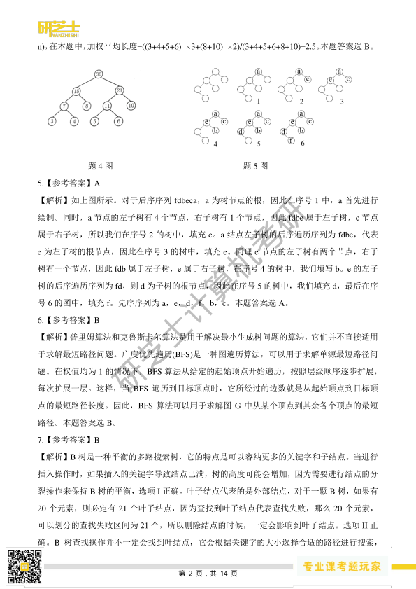
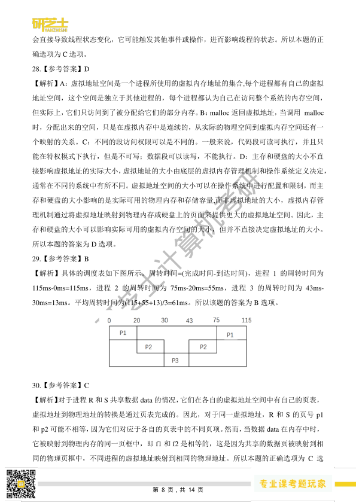
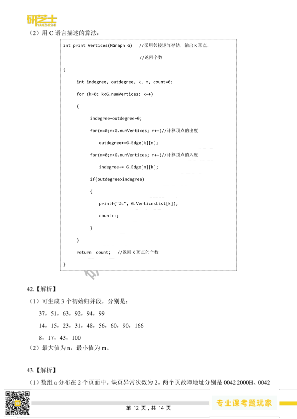

第 1 / 14 页

研芝士计算机考研
2023 考研408 真题答案解析
一、单项选择题
1.【参考答案】D
【解析】线性表的顺序存储结构采用一组地址连续的存储单元依次存储线性表的数据元素。特
点是逻辑上相邻的数据元素在物理位置上相邻。线性表顺序存储结构是一种随机存取的存储结
构，设线性表的每个元素占L 个存储单元，第一个元素a1 的存储地址是LOC(a1)，则任意元素
ai 的LOC(ai)=LOC(a1)+(i-1)*L。因此获取第i 个值的算法为常量阶O(1)。
2.【参考答案】C
【解析】主要考察双链表的插入操作，解决这类问题可在纸上画出具体的双链表进行模拟。因
为 s->next 已经赋值为p 的后一个结点，同时p->next 指针已经赋值为s。所以只需要处理
s->next->prev 和 s->next->prev 的赋值，s->prev 需要指向p，s-next->prev 需要指向s。因为
p->next 和s 指向同一个结点，所以可以用p->next 代表s。故本题的正确选项为C。
3.【参考答案】A
【解析】存储稀疏矩阵M，三元组表的表项存储了行row、列col、值value 三种信息，除此之
外，我们还需要知道矩阵M 的规模 rows × cols，即M 的行数rows 和M 的列数cols，这个
信息应该直接给出。当我们需要某个位置的元素，可以先根据M 的行数和列数判断是否越界，
如果没有越界，在三元组进行查找，如果三元组没有保存对应位置的值代表矩阵中该位置的值
为0。本题答案选A。
4.【参考答案】B
【解析】计算字符集S 构造的哈夫曼编码的加权平均长度，我们需要使用字符的频次来确定每
个字符的编码长度，并计算加权平均值。给定字符集S 中各字符出现的频次为3，4，5，6，
8，10，我们可以按照哈夫曼编码算法构造哈夫曼树。构建的哈夫曼树如图所示。加权平均长
度=(编码长度1×频次1+编码长度2×频次2+...+编码长度n×频次n)/(频次1+频次2+…+频次
1． D
2． C
3． A
4． B
5． A
6． B
7． B
8． B
9． C
10． C
11． D
12． C
13． A
14． A
15． C
16． B
17． A
18． B
19． C
20． D
21． D
22． C
23． D
24． A
25． C
26． D
27． C
28． D
29． B
30． C
31． B
32． D
33． D
34． C
35． B
36． C
37． D
38． A
39． B
40． D
第 1 页，共 14 页
查看 / 复制本页文字
研芝士计算机考研 2023 考研408 真题答案解析 一、单项选择题 1.【参考答案】D 【解析】线性表的顺序存储结构采用一组地址连续的存储单元依次存储线性表的数据元素。特 点是逻辑上相邻的数据元素在物理位置上相邻。线性表顺序存储结构是一种随机存取的存储结 构，设线性表的每个元素占L 个存储单元，第一个元素a1 的存储地址是LOC(a1)，则任意元素 ai 的LOC(ai)=LOC(a1)+(i-1)*L。因此获取第i 个值的算法为常量阶O(1)。 2.【参考答案】C 【解析】主要考察双链表的插入操作，解决这类问题可在纸上画出具体的双链表进行模拟。因 为 s->next 已经赋值为p 的后一个结点，同时p->next 指针已经赋值为s。所以只需要处理 s->next->prev 和 s->next->prev 的赋值，s->prev 需要指向p，s-next->prev 需要指向s。因为 p->next 和s 指向同一个结点，所以可以用p->next 代表s。故本题的正确选项为C。 3.【参考答案】A 【解析】存储稀疏矩阵M，三元组表的表项存储了行row、列col、值value 三种信息，除此之 外，我们还需要知道矩阵M 的规模 rows × cols，即M 的行数rows 和M 的列数cols，这个 信息应该直接给出。当我们需要某个位置的元素，可以先根据M 的行数和列数判断是否越界， 如果没有越界，在三元组进行查找，如果三元组没有保存对应位置的值代表矩阵中该位置的值 为0。本题答案选A。 4.【参考答案】B 【解析】计算字符集S 构造的哈夫曼编码的加权平均长度，我们需要使用字符的频次来确定每 个字符的编码长度，并计算加权平均值。给定字符集S 中各字符出现的频次为3，4，5，6， 8，10，我们可以按照哈夫曼编码算法构造哈夫曼树。构建的哈夫曼树如图所示。加权平均长 度=(编码长度1×频次1+编码长度2×频次2+...+编码长度n×频次n)/(频次1+频次2+…+频次 1． D 2． C 3． A 4． B 5． A 6． B 7． B 8． B 9． C 10． C 11． D 12． C 13． A 14． A 15． C 16． B 17． A 18． B 19． C 20． D 21． D 22． C 23． D 24． A 25． C 26． D 27． C 28． D 29． B 30． C 31． B 32． D 33． D 34． C 35． B 36． C 37． D 38． A 39． B 40． D 第 1 页，共 14 页
第 2 / 14 页

研芝士计算机考研
n)，在本题中，加权平均长度=((3+4+5+6) ×3+(8+10) ×2)/(3+4+5+6+8+10)=2.5。本题答案选B。
题4 图
题5 图
5.【参考答案】A
【解析】如上图所示。对于后序序列fdbeca，a 为树节点的根，因此在序号1 中，a 首先进行
绘制。同时，a 节点的左子树有4 个节点，右子树有1 个节点，因此fdbe 属于左子树，c 节点
属于右子树，所以我们在序号2 的树中，填充c。a 结点左子树的后序遍历序列为fdbe，代表
e 为左子树的根节点，因此在序号3 的树中，填充e。同理e 节点的左子树有两个节点，右子
树有一个节点，因此fdb 属于左子树，e 属于右子树，在序号4 的树中，我们填写b。e 的左子
树的后序遍历序列为fd，则d 为子树的根节点，因此在序号5 的树中，我们填充d，最后在序
号6 的图中，填充f。先序序列为a，e，d，f，b，c。本题答案选A。
6.【参考答案】B
【解析】普里姆算法和克鲁斯卡尔算法是用于解决最小生成树问题的算法，它们并不直接适用
于求解最短路径问题。广度优先遍历(BFS)是一种图遍历算法，可以用于求解单源最短路径问
题。在权值均为1 的情况下，BFS 算法从给定的起始顶点开始遍历，按照层级顺序逐步扩展，
每次扩展一层。这样，当BFS 遍历到目标顶点时，它所经过的边数就是从起始顶点到目标顶
点的最短路径长度。因此，BFS 算法可以用于求解图G 中从某个顶点到其余各个顶点的最短
路径。本题答案选B。
7.【参考答案】B
【解析】B 树是一种平衡的多路搜索树，它的特点是可以容纳更多的关键字和子结点。当进行
插入操作时，如果插入的关键字导致结点已满，树的高度可能会增加，因为需要进行结点的分
裂操作来保持B 树的平衡，选项I 正确。叶子结点代表的是外部结点，对于一颗B 树，如果有
20 个元素，则必定有21 个叶子结点，因为查找到叶子结点代表查找失败，那么20 个元素，
可以划分的查找失败区间为21 个，所以删除结点的时候，一定会影响到叶子结点。选项II 正
确。B 树查找操作并不一定会找到叶结点，它会根据关键字的大小选择合适的路径进行搜索，
第 2 页，共 14 页
查看 / 复制本页文字
研芝士计算机考研 n)，在本题中，加权平均长度=((3+4+5+6) ×3+(8+10) ×2)/(3+4+5+6+8+10)=2.5。本题答案选B。 题4 图 题5 图 5.【参考答案】A 【解析】如上图所示。对于后序序列fdbeca，a 为树节点的根，因此在序号1 中，a 首先进行 绘制。同时，a 节点的左子树有4 个节点，右子树有1 个节点，因此fdbe 属于左子树，c 节点 属于右子树，所以我们在序号2 的树中，填充c。a 结点左子树的后序遍历序列为fdbe，代表 e 为左子树的根节点，因此在序号3 的树中，填充e。同理e 节点的左子树有两个节点，右子 树有一个节点，因此fdb 属于左子树，e 属于右子树，在序号4 的树中，我们填写b。e 的左子 树的后序遍历序列为fd，则d 为子树的根节点，因此在序号5 的树中，我们填充d，最后在序 号6 的图中，填充f。先序序列为a，e，d，f，b，c。本题答案选A。 6.【参考答案】B 【解析】普里姆算法和克鲁斯卡尔算法是用于解决最小生成树问题的算法，它们并不直接适用 于求解最短路径问题。广度优先遍历(BFS)是一种图遍历算法，可以用于求解单源最短路径问 题。在权值均为1 的情况下，BFS 算法从给定的起始顶点开始遍历，按照层级顺序逐步扩展， 每次扩展一层。这样，当BFS 遍历到目标顶点时，它所经过的边数就是从起始顶点到目标顶 点的最短路径长度。因此，BFS 算法可以用于求解图G 中从某个顶点到其余各个顶点的最短 路径。本题答案选B。 7.【参考答案】B 【解析】B 树是一种平衡的多路搜索树，它的特点是可以容纳更多的关键字和子结点。当进行 插入操作时，如果插入的关键字导致结点已满，树的高度可能会增加，因为需要进行结点的分 裂操作来保持B 树的平衡，选项I 正确。叶子结点代表的是外部结点，对于一颗B 树，如果有 20 个元素，则必定有21 个叶子结点，因为查找到叶子结点代表查找失败，那么20 个元素， 可以划分的查找失败区间为21 个，所以删除结点的时候，一定会影响到叶子结点。选项II 正 确。B 树查找操作并不一定会找到叶结点，它会根据关键字的大小选择合适的路径进行搜索， 第 2 页，共 14 页
第 3 / 14 页
研芝士计算机考研
可能会在非叶结点上停止查找，只有当目标关键字在B 树中或者关键字不在B 树中，才会找
到叶结点，选项III 错误。叶子结点代表的是查找失败的位置，插入的结点最终位置肯定会位
于非叶子节点。选项IV 错误。本题答案选B。
8.【参考答案】B
【解析】在含有600 个元素的有序表进行折半查找时，其关键字比较次数最多的情况发生在目
标元素不在表中的情况下。在这种情况下，折半查找会进行到最后一步，直到左边界和右边界
相遇。因此，关键字比较次数最多的情况是在查找过程中遍历整个表的情况。在进行折半查找
时，每次比较会将查找范围缩小一半，直到找到目标元素或确定目标元素不在表中。对于600
个元素的有序表，因为log2(600)≈9.22，采用9 次遍历并不能查找完成，因此需要10 次查找。
本题答案选B。
9.【参考答案】C
【解析】线性探测再散列法中删除一个关键字会导致后面的关键字无法通过线性探测找到正确
的位置。当删除一个关键字时，为了保持散列表的连续性，通常会将后续的关键字向前移动填
充空缺，这样后续的查找操作才能继续正确地找到它们。然而，如果删除的是一个位于中间位
置的关键字，后面的关键字需要依次向前移动，这会导致删除操作的时间复杂度较高，因为需
要移动大量的关键字。为了解决删除操作中的位置依赖性问题，可以使用删除标记来表示一个
位置上的关键字已被删除。
如下表所示，查找失败的平均查找长度为(1+3+2+1+2)/5=1.8。本题答案选C。
10.【参考答案】C
【解析】快速排序在每一轮划分时，通常选择一个枢轴元素将序列分成两部分，并且在交换
元素时可能改变相同关键字元素的相对顺序，因此不是稳定的排序算法。堆排序使用堆数据
结构进行排序，其中在建堆和调整堆的过程中，元素的交换可能导致相同关键字元素的相对
顺序发生改变，因此堆排序也不是稳定的排序算法。希尔排序是基于插入排序的一种改进算
法，它通过将待排序的序列划分成若干个较小的子序列进行插入排序，然后逐步缩小子序列
的间隔，最终完成整个序列的排序。由于希尔排序是通过跳跃式的插入排序进行排序的，相
同关键字的元素可能会跨越较大的间隔进行比较和交换。这种跨越较大间隔的比较和交换可
地址
0
1
2
3
4
Key
2022
12
25（Delete）
查找失败次数
1
3
2
1
2
第 3 页，共 14 页
查看 / 复制本页文字
研芝士计算机考研 可能会在非叶结点上停止查找，只有当目标关键字在B 树中或者关键字不在B 树中，才会找 到叶结点，选项III 错误。叶子结点代表的是查找失败的位置，插入的结点最终位置肯定会位 于非叶子节点。选项IV 错误。本题答案选B。 8.【参考答案】B 【解析】在含有600 个元素的有序表进行折半查找时，其关键字比较次数最多的情况发生在目 标元素不在表中的情况下。在这种情况下，折半查找会进行到最后一步，直到左边界和右边界 相遇。因此，关键字比较次数最多的情况是在查找过程中遍历整个表的情况。在进行折半查找 时，每次比较会将查找范围缩小一半，直到找到目标元素或确定目标元素不在表中。对于600 个元素的有序表，因为log2(600)≈9.22，采用9 次遍历并不能查找完成，因此需要10 次查找。 本题答案选B。 9.【参考答案】C 【解析】线性探测再散列法中删除一个关键字会导致后面的关键字无法通过线性探测找到正确 的位置。当删除一个关键字时，为了保持散列表的连续性，通常会将后续的关键字向前移动填 充空缺，这样后续的查找操作才能继续正确地找到它们。然而，如果删除的是一个位于中间位 置的关键字，后面的关键字需要依次向前移动，这会导致删除操作的时间复杂度较高，因为需 要移动大量的关键字。为了解决删除操作中的位置依赖性问题，可以使用删除标记来表示一个 位置上的关键字已被删除。 如下表所示，查找失败的平均查找长度为(1+3+2+1+2)/5=1.8。本题答案选C。 10.【参考答案】C 【解析】快速排序在每一轮划分时，通常选择一个枢轴元素将序列分成两部分，并且在交换 元素时可能改变相同关键字元素的相对顺序，因此不是稳定的排序算法。堆排序使用堆数据 结构进行排序，其中在建堆和调整堆的过程中，元素的交换可能导致相同关键字元素的相对 顺序发生改变，因此堆排序也不是稳定的排序算法。希尔排序是基于插入排序的一种改进算 法，它通过将待排序的序列划分成若干个较小的子序列进行插入排序，然后逐步缩小子序列 的间隔，最终完成整个序列的排序。由于希尔排序是通过跳跃式的插入排序进行排序的，相 同关键字的元素可能会跨越较大的间隔进行比较和交换。这种跨越较大间隔的比较和交换可 地址 0 1 2 3 4 Key 2022 12 25（Delete） 查找失败次数 1 3 2 1 2 第 3 页，共 14 页
第 4 / 14 页
研芝士计算机考研
能导致相同关键字的元素的相对顺序发生改变，因此希尔排序是不稳定的排序算法。因此不
稳定的排序算法有希尔排序、快速排序、堆排序。本题答案选C。
11.【参考答案】D
【解析】在快速排序算法中，划分过程通常选择一个枢轴元素来将待排序序列划分为两个子序
列。因为是升序排序，所以枢纽元素的前半个子序列的值需要都小于枢轴值，后半个子序列的
值需要都大于枢轴值。分别从每个选项来看，A 选项的枢轴值为11，前半个子序列的值只有
68，大于枢轴值11，不符合。B 选项的枢轴值为70，前半个子序列都小于70，但后半个子序
列存在23 和48 小于70，不符合。C 选项的枢轴值为80，前半个子序列的值都小于80，但是
后半个子序列存在48 小于80，不符合。D 选项的枢轴值为81，81 前面的元素都小于81，81
后面的元素都大于81，符合。因此本题的正确选项为D。
12.【参考答案】C
【解析】p 每条指令平均需要1.2 个时钟周期，机器M 的主频为1.5GHZ 代表每秒共有1.5G
个时钟周期，则每秒能执行1.5G/1.2=1.25G 条指令。执行p 程序共需要5*105*1.2=6*105 个时
钟周期，每秒有1.5G 个时钟周期，则6*105 个时钟周期共需要 6* 105/1.5G*103=0.4ms。所以
本题的正确答案为C。
13.【参考答案】A
【解析】机器数是计算机内部用来表示和存储数值的二进制形式。对于有符号的short 型变量，
通常采用16 位补码表示法。对于给定的short 型变量x=-8190，我们需要将其转换为二进制的
补码表示。首先，将数值8190 转换为二进制形式：8190 = 0001 1111 1111 1110B，然后取其二
进制补码（负数取反后加1），补码为 1110 0000 0000 0010B，转化为16 进制为E002H。因此
正确选项为A。
14.【参考答案】A
【解析】给定的机器数为 8020 0000H，表示一个32 位的二进制数。我们需要将其转换为float
型变量的值。8020 0000H = 1000 0000 0010 0000 0000 0000 0000 0000B。根据IEEE754 单精度
浮点数格式，首位表示符号位，接下来的8 位表示指数部分，剩下的23 位表示尾数部分。拆
分该二进制表示，我们得到以下部分，符号位：1(表示负数)，指数部分：00000000B(十进制值
为0)。尾数部分：010 0000 0000 0000 0000 0000B。本题考查的点为IEEE 754 单精度点数的表
示，因为指数部分为0，尾数部分不为0，所以为非规格化的表示，所以尾数部分的形式为0.M
不是1.M，同时指数部分是-126，而不是-127，则真值为
-0.01*2-126 = -2-128，正确答案为A 选项。
第 4 页，共 14 页
查看 / 复制本页文字
研芝士计算机考研 能导致相同关键字的元素的相对顺序发生改变，因此希尔排序是不稳定的排序算法。因此不 稳定的排序算法有希尔排序、快速排序、堆排序。本题答案选C。 11.【参考答案】D 【解析】在快速排序算法中，划分过程通常选择一个枢轴元素来将待排序序列划分为两个子序 列。因为是升序排序，所以枢纽元素的前半个子序列的值需要都小于枢轴值，后半个子序列的 值需要都大于枢轴值。分别从每个选项来看，A 选项的枢轴值为11，前半个子序列的值只有 68，大于枢轴值11，不符合。B 选项的枢轴值为70，前半个子序列都小于70，但后半个子序 列存在23 和48 小于70，不符合。C 选项的枢轴值为80，前半个子序列的值都小于80，但是 后半个子序列存在48 小于80，不符合。D 选项的枢轴值为81，81 前面的元素都小于81，81 后面的元素都大于81，符合。因此本题的正确选项为D。 12.【参考答案】C 【解析】p 每条指令平均需要1.2 个时钟周期，机器M 的主频为1.5GHZ 代表每秒共有1.5G 个时钟周期，则每秒能执行1.5G/1.2=1.25G 条指令。执行p 程序共需要5*105*1.2=6*105 个时 钟周期，每秒有1.5G 个时钟周期，则6*105 个时钟周期共需要 6* 105/1.5G*103=0.4ms。所以 本题的正确答案为C。 13.【参考答案】A 【解析】机器数是计算机内部用来表示和存储数值的二进制形式。对于有符号的short 型变量， 通常采用16 位补码表示法。对于给定的short 型变量x=-8190，我们需要将其转换为二进制的 补码表示。首先，将数值8190 转换为二进制形式：8190 = 0001 1111 1111 1110B，然后取其二 进制补码（负数取反后加1），补码为 1110 0000 0000 0010B，转化为16 进制为E002H。因此 正确选项为A。 14.【参考答案】A 【解析】给定的机器数为 8020 0000H，表示一个32 位的二进制数。我们需要将其转换为float 型变量的值。8020 0000H = 1000 0000 0010 0000 0000 0000 0000 0000B。根据IEEE754 单精度 浮点数格式，首位表示符号位，接下来的8 位表示指数部分，剩下的23 位表示尾数部分。拆 分该二进制表示，我们得到以下部分，符号位：1(表示负数)，指数部分：00000000B(十进制值 为0)。尾数部分：010 0000 0000 0000 0000 0000B。本题考查的点为IEEE 754 单精度点数的表 示，因为指数部分为0，尾数部分不为0，所以为非规格化的表示，所以尾数部分的形式为0.M 不是1.M，同时指数部分是-126，而不是-127，则真值为 -0.01*2-126 = -2-128，正确答案为A 选项。 第 4 页，共 14 页
第 5 / 14 页
研芝士计算机考研
15.【参考答案】C
【解析】由于CPU 有30 根地址线,每根地址线可以表示2 个不同的状态(0 或1)。因此，CPU
的地址线共有230 个不同的地址。根据 RAM 和ROM 的分配比，RAM 区占据整个地址空间的
3/4，而ROM 区占据剩下的1/4，我们可以选取高位的两根地址线，00、01、10 分配给连续低
地址的RAM，则高位只剩下11 可以分配，所以可以分配的地址范围为110...00(28 个0)~11...1(30
个1)，十六进制表示为300000000H~ 3FFFFFFFFH。故本题的正确选项为C。
16.【参考答案】B
【解析】int 类型在计算机中以补码形式表示，因此，x（10）的二进制表示为 0000 0000 0000
0000 0000 0000 0000 1010B，y（-20）的二进制表示为 11111111 11111111 1111 1111 11101100。
CF 表示无符号整数运算时的进位/借位，因此计算CF 的时候，需要把和x 和y 当成无符号数
进行计算，因为x 不够减y，所以CF=1。计算OF 的时候，需要把和x 和y 当成有符号数进行
计算，x-y=30，不超过int 的最大值，不会产生溢出，所以OF=0。所以本题的正确选项为B。
17.【参考答案】A
【解析】在指令中，使用不同的操作码来区分寄存器中存放的是操作数还是操作数的地址指
令会有明确的寻址模式，指示使用寄存器中的内容作为操作数或操作数地址。当CPU 在执行
指令时会根据指令中的寻址方式字段来正确解析寄存器中的内容，并根据需要进行相应的操
作。所以本题的正确选项为A。
18.【参考答案】B
【解析】组合逻辑元件是那些仅由组合逻辑电路组成的元件，其输出仅取决于当前的输入，而
不受存储器或时钟信号的影响。算术逻辑部件ALU 和多路选择器MUX 都属于组合逻辑元件，
它们的输出仅由当前输入决定。程序计数器PC 和通用寄存器是时序逻辑元件，也称为状态元
件。它们的输出不仅取决于当前输入，还受存储器或时钟信号的影响，并且具有状态或存储功
能。因此本题选B。
19.【参考答案】C
【解析】旁路技术通过在流水线中引入旁路(Forwarding)路径，将之前指令的结果直接传递给
后续需要使用的指令，避免了流水线停顿。具体来说，当检测到数据相关时，旁路技术将结果
从执行阶段的功能单元（如算术逻辑单元）直接转发给需要使用该结果的指令，绕过了中间的
写回阶段。I1 和I2 存在数据相关，可以通过旁路技术，获取到执行阶段S2 的值，解决数据相
关。I2 和I3 存在数据相关，I3 需要S3 的值，可以通过旁路技术获取到I2 指令访存阶段S3 的
值，所以I3 发生流水线的阻塞。I4 存在控制相关，需要等待I3 执行结束才能判断I4 是否能够
第 5 页，共 14 页
查看 / 复制本页文字
研芝士计算机考研 15.【参考答案】C 【解析】由于CPU 有30 根地址线,每根地址线可以表示2 个不同的状态(0 或1)。因此，CPU 的地址线共有230 个不同的地址。根据 RAM 和ROM 的分配比，RAM 区占据整个地址空间的 3/4，而ROM 区占据剩下的1/4，我们可以选取高位的两根地址线，00、01、10 分配给连续低 地址的RAM，则高位只剩下11 可以分配，所以可以分配的地址范围为110...00(28 个0)~11...1(30 个1)，十六进制表示为300000000H~ 3FFFFFFFFH。故本题的正确选项为C。 16.【参考答案】B 【解析】int 类型在计算机中以补码形式表示，因此，x（10）的二进制表示为 0000 0000 0000 0000 0000 0000 0000 1010B，y（-20）的二进制表示为 11111111 11111111 1111 1111 11101100。 CF 表示无符号整数运算时的进位/借位，因此计算CF 的时候，需要把和x 和y 当成无符号数 进行计算，因为x 不够减y，所以CF=1。计算OF 的时候，需要把和x 和y 当成有符号数进行 计算，x-y=30，不超过int 的最大值，不会产生溢出，所以OF=0。所以本题的正确选项为B。 17.【参考答案】A 【解析】在指令中，使用不同的操作码来区分寄存器中存放的是操作数还是操作数的地址指 令会有明确的寻址模式，指示使用寄存器中的内容作为操作数或操作数地址。当CPU 在执行 指令时会根据指令中的寻址方式字段来正确解析寄存器中的内容，并根据需要进行相应的操 作。所以本题的正确选项为A。 18.【参考答案】B 【解析】组合逻辑元件是那些仅由组合逻辑电路组成的元件，其输出仅取决于当前的输入，而 不受存储器或时钟信号的影响。算术逻辑部件ALU 和多路选择器MUX 都属于组合逻辑元件， 它们的输出仅由当前输入决定。程序计数器PC 和通用寄存器是时序逻辑元件，也称为状态元 件。它们的输出不仅取决于当前输入，还受存储器或时钟信号的影响，并且具有状态或存储功 能。因此本题选B。 19.【参考答案】C 【解析】旁路技术通过在流水线中引入旁路(Forwarding)路径，将之前指令的结果直接传递给 后续需要使用的指令，避免了流水线停顿。具体来说，当检测到数据相关时，旁路技术将结果 从执行阶段的功能单元（如算术逻辑单元）直接转发给需要使用该结果的指令，绕过了中间的 写回阶段。I1 和I2 存在数据相关，可以通过旁路技术，获取到执行阶段S2 的值，解决数据相 关。I2 和I3 存在数据相关，I3 需要S3 的值，可以通过旁路技术获取到I2 指令访存阶段S3 的 值，所以I3 发生流水线的阻塞。I4 存在控制相关，需要等待I3 执行结束才能判断I4 是否能够 第 5 页，共 14 页
第 6 / 14 页
研芝士计算机考研
执行，所以14 会发生流水线阻塞。指令流水线如图所示：
I4
addi t2,t2,20
IF
ID
EX
MEM
WR
I3
beq t2,s3,L1
IF
ID
EX
MEM
WR
I2
load s3,0(s2)
IF
ID
EX
MEM
WR
I1
add s2,s1,s0
IF
ID
EX
MEM
WR
1
2
3
4
5
6
7
8
9
20.【参考答案】D
【解析】存储总线的宽度为64 位，代表每次数据传送可以传送64bit 的数据。总线时钟频率位
1GHZ，代表1s 可以传送1G 次，即1*109 次/s，所以每个时钟周期为10-9s=1ns。具体步骤为：
CPU 通过地址线传输地址花费1ns，主存准备数据6ns，主存传输数据到CPU 花费1ns，共8ns，
因为32B 的数据在总线宽度为64 位的总线上，需要传输(32*8bit)/64bit =4 次，因此读取一个
主存块的时间为4×8ns=32ns。所以本题的正确选项为D 选项。
21.【参考答案】D
【解析】异常通常指内部中断，是指令执行错误或中断指令产生的内部中断，在指令执行过程
中被检测，因此选项A 正确。外部中断指硬件中断，在指令执行完毕后，CPU 会检查中断请
求信号，如果有中断请求发生，则进行中断响应，暂停当前的任务，保存现场并处理中断，因
此，选项B，C 正确。外部设备通过中断控制器向CPU 发出中断请求信号而不是中断结束信
号，选项D 错误。
22.【参考答案】C
【解析】在DMA(直接内存访问)方式下，CPU 并不直接执行DMA 传送程序进行IO 操作。
DMA 是一种特殊的I/O 控制方式，它允许外设设备直接与主存进行数据传输，数据传输过程
是由硬件（DMA 控制器）完成的，而无需CPU 的干预，所以C 选项的描述错误。本题需要选
择错误的选项，因此本题的答案为C。
23.【参考答案】D
【解析】选项II 较高的可靠性：微内核操作系统将核心功能模块化，将部分操作系统功能移出
内核，以减少内核的复杂性和错误的影响范围，从而提高系统的可靠性，由于微内核中只包含
最基本的功能，因此可以更容易地对其进行验证和测试，减少错误的概率。选项III 较高的安
全性：微内核操作系统通过将一些非核心功能移出内核，以降低系统的攻击面，只有核心的、
必要的功能位于内核中，而其他的服务和驱动程序则在用户空间运行，减少了恶意代码对内核
的直接访问，这有助于提高系统的安全性，并减少潜在的漏洞。选项IV 较强的可扩展性：微
第 6 页，共 14 页
查看 / 复制本页文字
研芝士计算机考研 执行，所以14 会发生流水线阻塞。指令流水线如图所示： I4 addi t2,t2,20 IF ID EX MEM WR I3 beq t2,s3,L1 IF ID EX MEM WR I2 load s3,0(s2) IF ID EX MEM WR I1 add s2,s1,s0 IF ID EX MEM WR 1 2 3 4 5 6 7 8 9 20.【参考答案】D 【解析】存储总线的宽度为64 位，代表每次数据传送可以传送64bit 的数据。总线时钟频率位 1GHZ，代表1s 可以传送1G 次，即1*109 次/s，所以每个时钟周期为10-9s=1ns。具体步骤为： CPU 通过地址线传输地址花费1ns，主存准备数据6ns，主存传输数据到CPU 花费1ns，共8ns， 因为32B 的数据在总线宽度为64 位的总线上，需要传输(32*8bit)/64bit =4 次，因此读取一个 主存块的时间为4×8ns=32ns。所以本题的正确选项为D 选项。 21.【参考答案】D 【解析】异常通常指内部中断，是指令执行错误或中断指令产生的内部中断，在指令执行过程 中被检测，因此选项A 正确。外部中断指硬件中断，在指令执行完毕后，CPU 会检查中断请 求信号，如果有中断请求发生，则进行中断响应，暂停当前的任务，保存现场并处理中断，因 此，选项B，C 正确。外部设备通过中断控制器向CPU 发出中断请求信号而不是中断结束信 号，选项D 错误。 22.【参考答案】C 【解析】在DMA(直接内存访问)方式下，CPU 并不直接执行DMA 传送程序进行IO 操作。 DMA 是一种特殊的I/O 控制方式，它允许外设设备直接与主存进行数据传输，数据传输过程 是由硬件（DMA 控制器）完成的，而无需CPU 的干预，所以C 选项的描述错误。本题需要选 择错误的选项，因此本题的答案为C。 23.【参考答案】D 【解析】选项II 较高的可靠性：微内核操作系统将核心功能模块化，将部分操作系统功能移出 内核，以减少内核的复杂性和错误的影响范围，从而提高系统的可靠性，由于微内核中只包含 最基本的功能，因此可以更容易地对其进行验证和测试，减少错误的概率。选项III 较高的安 全性：微内核操作系统通过将一些非核心功能移出内核，以降低系统的攻击面，只有核心的、 必要的功能位于内核中，而其他的服务和驱动程序则在用户空间运行，减少了恶意代码对内核 的直接访问，这有助于提高系统的安全性，并减少潜在的漏洞。选项IV 较强的可扩展性：微 第 6 页，共 14 页
第 7 / 14 页
研芝士计算机考研
内核操作系统的设计使得新增功能或服务更容易添加到系统中。由于非核心功能运行在用户空
间，可以通过插件或模块的形式进行扩展，而无需对内核进行大规模的修改，这使得微内核操
作系统更具有灵活性和可扩展性。微内核操作系统采用模块化设计，将一部分功能移至用户空
间，这就需要通过进程间通信（IPC）机制来实现内核与用户空间的交互。这种通信会引入额
外的开销，包括上下文切换、数据拷贝等，从而影响系统的性能。所以选项I 不是微内核操作
系统所具有的特点，正确的选项为II，III，IV，选择D 选项。
24.【参考答案】A
【解析】在操作系统内核中，中断向量表适合采用的数据结构是数组（选项A）。中断向量表
是一种用于存储中断处理程序入口地址的数据结构，它以中断号作为索引，将中断号映射到相
应的中断处理程序入口地址。由于中断号是一个固定的范围（例如，0~255）采用数组可以实
现快速的索引和访问，具有较高的效率。使用数组可以直接根据中断号计算出对应的数组索引
而不需要遍历链表或队列来查找对应的处理程序入口地址，从而提高中断处理的效率。所以本
题的正确选项为A。
25.【参考答案】C
【解析】物理内存大小为16GB，每页大小为4KB，因此物理内存总共包含的页框数为
(16GB)/(4KB)=234/212=222。位图需要管理每个页框的空闲状态，因此位图的位数应该等于物理
内存中页框的数量。每个位表示一个页框的空闲状态，所以位图所占空间大小应为(位图所占
位数)/8 =(222)/8 = 219bytes =512KB，因此，位图所占空间的大小为512KB，选项C 为正确答案。
26.【参考答案】D
【解析】当用户程序需要访问特权指令或执行需要操作系统提供的服务时，它会通过系统调用
请求进人内核态。在系统调用期间，CPU 会切换到内核态执行相应的内核代码来满足用户程序
的需求。一旦系统调用执行完毕，CPU 会从内核态返回到用户态继续执行用户程序。所以，执
行系统调用是导致CPU 从内核态转为用户态的关键操作。所以该题的正确选项为D 选项。
27.【参考答案】C
【解析】B 缺页异常：当线程访问的页面不在内存中时，会触发缺页异常，处理缺页异常时，
线程可能需要等待操作系统将所需页面加载到内存中，这会导致线程由执行态变为阻塞态。C
主动让出CPU：线程可以通过主动让出CPU 的方式，将自身的执行权限交给其他就绪态的线
程。这会导致线程由执行态变为就绪态。D 执行信号量的wait（）操作：在多线程编程中，信
号量通常用于线程间的同步和互斥。当一个线程执行信号量的wait（）操作时，如果信号量的
计数值不满足条件，线程会进入阻塞状态，从执行态变为阻塞态。键盘输入（选项A）通常不
第 7 页，共 14 页
查看 / 复制本页文字
研芝士计算机考研 内核操作系统的设计使得新增功能或服务更容易添加到系统中。由于非核心功能运行在用户空 间，可以通过插件或模块的形式进行扩展，而无需对内核进行大规模的修改，这使得微内核操 作系统更具有灵活性和可扩展性。微内核操作系统采用模块化设计，将一部分功能移至用户空 间，这就需要通过进程间通信（IPC）机制来实现内核与用户空间的交互。这种通信会引入额 外的开销，包括上下文切换、数据拷贝等，从而影响系统的性能。所以选项I 不是微内核操作 系统所具有的特点，正确的选项为II，III，IV，选择D 选项。 24.【参考答案】A 【解析】在操作系统内核中，中断向量表适合采用的数据结构是数组（选项A）。中断向量表 是一种用于存储中断处理程序入口地址的数据结构，它以中断号作为索引，将中断号映射到相 应的中断处理程序入口地址。由于中断号是一个固定的范围（例如，0~255）采用数组可以实 现快速的索引和访问，具有较高的效率。使用数组可以直接根据中断号计算出对应的数组索引 而不需要遍历链表或队列来查找对应的处理程序入口地址，从而提高中断处理的效率。所以本 题的正确选项为A。 25.【参考答案】C 【解析】物理内存大小为16GB，每页大小为4KB，因此物理内存总共包含的页框数为 (16GB)/(4KB)=234/212=222。位图需要管理每个页框的空闲状态，因此位图的位数应该等于物理 内存中页框的数量。每个位表示一个页框的空闲状态，所以位图所占空间大小应为(位图所占 位数)/8 =(222)/8 = 219bytes =512KB，因此，位图所占空间的大小为512KB，选项C 为正确答案。 26.【参考答案】D 【解析】当用户程序需要访问特权指令或执行需要操作系统提供的服务时，它会通过系统调用 请求进人内核态。在系统调用期间，CPU 会切换到内核态执行相应的内核代码来满足用户程序 的需求。一旦系统调用执行完毕，CPU 会从内核态返回到用户态继续执行用户程序。所以，执 行系统调用是导致CPU 从内核态转为用户态的关键操作。所以该题的正确选项为D 选项。 27.【参考答案】C 【解析】B 缺页异常：当线程访问的页面不在内存中时，会触发缺页异常，处理缺页异常时， 线程可能需要等待操作系统将所需页面加载到内存中，这会导致线程由执行态变为阻塞态。C 主动让出CPU：线程可以通过主动让出CPU 的方式，将自身的执行权限交给其他就绪态的线 程。这会导致线程由执行态变为就绪态。D 执行信号量的wait（）操作：在多线程编程中，信 号量通常用于线程间的同步和互斥。当一个线程执行信号量的wait（）操作时，如果信号量的 计数值不满足条件，线程会进入阻塞状态，从执行态变为阻塞态。键盘输入（选项A）通常不 第 7 页，共 14 页
第 8 / 14 页

研芝士计算机考研
会直接导致线程状态变化，它可能触发其他事件或操作，进而影响线程的状态。所以本题的正
确选项为C 选项。
28.【参考答案】D
【解析】A：虚拟地址空间是一个进程所使用的虚拟内存地址的集合,每个进程都有自己的虚拟
地址空间，这个空间是独立于其他进程的，每个进程都认为自己在访问整个系统的内存空间，
但实际上，它们只访问到了被分配给它们的部分内存。B：malloc 返回虚拟地址，当调用 malloc
时，分配出来的空间，只是在虚拟内存中是连续的，从实际的物理空间到虚拟内存空间还有一
个映射的关系。C：不同的段访问权限可以是不同的。一般来说，代码段可读可执行，并且只
能在特权模式下执行，但是不可写；数据段可以读写，不能执行。D：主存和硬盘的大小不直
接影响虚拟地址的实际大小，虚拟地址的大小由底层的虚拟内存管理机制和操作系统定义决定，
通常在不同的系统中有所不同。虚拟地址空间的大小可以在操作系统中进行配置和限制，而主
存和硬盘的大小影响的是实际可用的物理内存和存储容量,而非虚拟地址的大小，虚拟内存管
理机制通过将虚拟地址映射到物理内存或硬盘上的页面来提供更大的虚拟地址空间。因此，主
存和硬盘的大小可以影响实际可用的虚拟内存空间的大小，但并不直接决定虚拟地址的大小。
所以本题的答案为D 选项。
29.【参考答案】B
【解析】具体的调度表如下图所示。周转时间=(完成时间-到达时间)，进程1 的周转时间为
115ms-0ms=115ms，进程2 的周转时间为75ms-20ms=55ms，进程3 的周转时间为43ms-
30ms=13ms。平均周转时间为(115+55+13)/3=61ms。所以该题的答案为B 选项。
30.【参考答案】C
【解析】对于进程R 和S 共享数据data 的情况，它们在各自的虚拟地址空间中有自己的页表，
虚拟地址到物理地址的转换是通过页表完成的。因此，对于同一虚拟地址，R 和S 的页号p1
和p2 可能不相等，因为它们对应于各自的页表中的不同页项。然而，当数据data 在内存中时，
它被映射到物理内存的同一页框中，即f1 和f2 是相等的，这是因为共享的数据页被映射到相
同的物理页框中，不同进程的虚拟地址映射到相同的物理地址。所以本题的正确选项为C 选
第 8 页，共 14 页
查看 / 复制本页文字
研芝士计算机考研 会直接导致线程状态变化，它可能触发其他事件或操作，进而影响线程的状态。所以本题的正 确选项为C 选项。 28.【参考答案】D 【解析】A：虚拟地址空间是一个进程所使用的虚拟内存地址的集合,每个进程都有自己的虚拟 地址空间，这个空间是独立于其他进程的，每个进程都认为自己在访问整个系统的内存空间， 但实际上，它们只访问到了被分配给它们的部分内存。B：malloc 返回虚拟地址，当调用 malloc 时，分配出来的空间，只是在虚拟内存中是连续的，从实际的物理空间到虚拟内存空间还有一 个映射的关系。C：不同的段访问权限可以是不同的。一般来说，代码段可读可执行，并且只 能在特权模式下执行，但是不可写；数据段可以读写，不能执行。D：主存和硬盘的大小不直 接影响虚拟地址的实际大小，虚拟地址的大小由底层的虚拟内存管理机制和操作系统定义决定， 通常在不同的系统中有所不同。虚拟地址空间的大小可以在操作系统中进行配置和限制，而主 存和硬盘的大小影响的是实际可用的物理内存和存储容量,而非虚拟地址的大小，虚拟内存管 理机制通过将虚拟地址映射到物理内存或硬盘上的页面来提供更大的虚拟地址空间。因此，主 存和硬盘的大小可以影响实际可用的虚拟内存空间的大小，但并不直接决定虚拟地址的大小。 所以本题的答案为D 选项。 29.【参考答案】B 【解析】具体的调度表如下图所示。周转时间=(完成时间-到达时间)，进程1 的周转时间为 115ms-0ms=115ms，进程2 的周转时间为75ms-20ms=55ms，进程3 的周转时间为43ms- 30ms=13ms。平均周转时间为(115+55+13)/3=61ms。所以该题的答案为B 选项。 30.【参考答案】C 【解析】对于进程R 和S 共享数据data 的情况，它们在各自的虚拟地址空间中有自己的页表， 虚拟地址到物理地址的转换是通过页表完成的。因此，对于同一虚拟地址，R 和S 的页号p1 和p2 可能不相等，因为它们对应于各自的页表中的不同页项。然而，当数据data 在内存中时， 它被映射到物理内存的同一页框中，即f1 和f2 是相等的，这是因为共享的数据页被映射到相 同的物理页框中，不同进程的虚拟地址映射到相同的物理地址。所以本题的正确选项为C 选 第 8 页，共 14 页
第 9 / 14 页
研芝士计算机考研
项。
31.【参考答案】B
【解析】索引节点是指文件系统中的一种数据结构，每个索引节点保存了文件系统中的一个文
件系统对象的元信息数据，但不包括数据内容或者文件名。内存索引节点是存放在内存中的索
引节点，文件被打开时，需要将磁盘索引节点复制到内存索引节点中。因此本题进程P 关闭F
时，需释放F 的索引节点所占的内存空间。所以该题的正确答案为B 选项。
32.【参考答案】D
【解析】I.设备类型：不同类型的设备有不同的特性和接口，需要根据设备类型进行适当的分
配和管理。II.设备使用状态：需要考虑设备的当前使用状态，即设备是否已经被其他进程占用
或者正在执行某个操作，设备分配时需要避免资源冲突。III.逻辑设备和物理设备的映射：在系
统中，逻辑设备和物理设备之间存在映射关系。逻辑设备是用户程序或操作系统中对设备的抽
象表示，而物理设备是实际的硬件设备。设备分配需要确保逻辑设备与物理设备之间的正确映
射。IV.进程对设备的访问权限：不同的进程可能对设备的访问有不同的权限要求。设备分配时
需要考虑进程的访问权限，确保只有具有适当权限的进程能够访问和使用设备。因此，正确的
选项是I、II、III、IV。本题的正确选项为D。
33.【参考答案】D
【解析】考点：计算机网络性能指标。题目给出了数据传输速率为100Mbps，通过时延带宽积
1000bit，计算出单向传播时延为0.01ms。文件大小是1MB，分组长度为1000B，可知一共有
1000 个分组。每一个分组长度是1000B ，带宽为100Mbps ，可以得出发送时延为
(1000*8)/100M=0.08ms。题目问的是从开始发送时刻起到H2 收到文件全部数据时刻止，那么
可以设开始发送文件的时间为0s，从这个时间开始，到最后一个分组到达主机H2 的时间，就
是题目要求的。那首先考虑最后一个分组的最后一个bit 是什么时候发送的。只看主机H1 会
发现，在0-0.08ms 的时候，主机H1 发送第1 个分组，0.08ms 时发完第1 个分组的最后一个
bit；在0.08-0.16ms 的时候，主机H1 发送第2 个分组，0.16ms 时发完第2 个分组的最后一个
bit；在0.16-0.24ms 的时候，主机H1 发送第3 个分组，0.24ms 时发完第3 个分组的最后一个
bit。以此类推可知，在第70.92-80ms 时，主机H1 发送第1000 个分组，80ms 时发完第1000
个分组的最后一个bit。接下来考虑最后一个分组需要经过哪些时间才可以到达主机H2。在第
80ms 时，最后一个分组的最后一个bit 从H1 发出，需要经过第一段链路才能到达路由器R，
这里需要一个单向传播时延0.01ms。到达路由器R 后，路由器对最后一个分组进行差错检测、
路由选择（该时间忽略不计），再通过发送器将最后一个分组发送出去，这里需要消耗一个发
第 9 页，共 14 页
查看 / 复制本页文字
研芝士计算机考研 项。 31.【参考答案】B 【解析】索引节点是指文件系统中的一种数据结构，每个索引节点保存了文件系统中的一个文 件系统对象的元信息数据，但不包括数据内容或者文件名。内存索引节点是存放在内存中的索 引节点，文件被打开时，需要将磁盘索引节点复制到内存索引节点中。因此本题进程P 关闭F 时，需释放F 的索引节点所占的内存空间。所以该题的正确答案为B 选项。 32.【参考答案】D 【解析】I.设备类型：不同类型的设备有不同的特性和接口，需要根据设备类型进行适当的分 配和管理。II.设备使用状态：需要考虑设备的当前使用状态，即设备是否已经被其他进程占用 或者正在执行某个操作，设备分配时需要避免资源冲突。III.逻辑设备和物理设备的映射：在系 统中，逻辑设备和物理设备之间存在映射关系。逻辑设备是用户程序或操作系统中对设备的抽 象表示，而物理设备是实际的硬件设备。设备分配需要确保逻辑设备与物理设备之间的正确映 射。IV.进程对设备的访问权限：不同的进程可能对设备的访问有不同的权限要求。设备分配时 需要考虑进程的访问权限，确保只有具有适当权限的进程能够访问和使用设备。因此，正确的 选项是I、II、III、IV。本题的正确选项为D。 33.【参考答案】D 【解析】考点：计算机网络性能指标。题目给出了数据传输速率为100Mbps，通过时延带宽积 1000bit，计算出单向传播时延为0.01ms。文件大小是1MB，分组长度为1000B，可知一共有 1000 个分组。每一个分组长度是1000B ，带宽为100Mbps ，可以得出发送时延为 (1000*8)/100M=0.08ms。题目问的是从开始发送时刻起到H2 收到文件全部数据时刻止，那么 可以设开始发送文件的时间为0s，从这个时间开始，到最后一个分组到达主机H2 的时间，就 是题目要求的。那首先考虑最后一个分组的最后一个bit 是什么时候发送的。只看主机H1 会 发现，在0-0.08ms 的时候，主机H1 发送第1 个分组，0.08ms 时发完第1 个分组的最后一个 bit；在0.08-0.16ms 的时候，主机H1 发送第2 个分组，0.16ms 时发完第2 个分组的最后一个 bit；在0.16-0.24ms 的时候，主机H1 发送第3 个分组，0.24ms 时发完第3 个分组的最后一个 bit。以此类推可知，在第70.92-80ms 时，主机H1 发送第1000 个分组，80ms 时发完第1000 个分组的最后一个bit。接下来考虑最后一个分组需要经过哪些时间才可以到达主机H2。在第 80ms 时，最后一个分组的最后一个bit 从H1 发出，需要经过第一段链路才能到达路由器R， 这里需要一个单向传播时延0.01ms。到达路由器R 后，路由器对最后一个分组进行差错检测、 路由选择（该时间忽略不计），再通过发送器将最后一个分组发送出去，这里需要消耗一个发 第 9 页，共 14 页
第 10 / 14 页
研芝士计算机考研
送时延0.08ms。最后，该分组在经过第2 段链路到达主机H2，这里还需要一个单向传播时延
0.01ms。综上所述，最终答案为80 + 0.01 + 0.08 + 0.01 = 80.10ms 的时间。答案选择D 选项。
34.【参考答案】C
【解析】对于无噪声理想信道，信道的最大数据传输率可以通过奈奎斯特定理计算，最大数据
传输的次数为2W=2×4MHz=8MHz，代表每秒传输8M 次，因为最大的数据传输率为48Mbps，
所以每次需要传输的比特数量为48Mbps/8MHz=6 位，所以每次传输的数据量位6 比特，那么
采用的QAM 调制方案为26=64，即采用QAM-64 的方案。本题的正确选项为C。
35.【参考答案】B
【解析】停等协议的信道利用率公式为
𝑇𝑇𝐷𝐷
𝑇𝑇𝐷𝐷+𝑅𝑅𝑅𝑅𝑅𝑅+𝑇𝑇𝐴𝐴 GBN 协议和SR 协议的信道利用率公式为
𝑊𝑊𝑇𝑇𝐷𝐷
𝑇𝑇𝐷𝐷+𝑅𝑅𝑅𝑅𝑅𝑅+𝑇𝑇𝐴𝐴观察会发现，
𝑇𝑇𝐷𝐷
𝑇𝑇𝐷𝐷+𝑅𝑅𝑅𝑅𝑅𝑅+𝑇𝑇𝐴𝐴项都是相同的，GBN 协议和SR 协议的信道利用率需要比停
等协议的信道利用率多乘上窗口大小（大于等于1）。得出结论，停等协议的信道利用率U1 最
小，排除C、D 选项。GBN 协议和SR 协议的信道利用率主要看窗口大小谁比较大。题目说了
帧序号位数为3 比特，那GBN 协议的发送窗口的尺寸W，应满足：1≤ W ≤2n-1。则发送窗口
最大为23-1=7。SR 协议的发送窗口的尺寸W，应满足：1≤W ≤2n-1，则发送窗口最大为23-1。因
此GBN 协议的信道利用率U2 的最大值要大于SR 协议的信道利用率U3。综上所述，答案选
择B 选项。
36.【参考答案】C
【解析】基于二进制指数退避算法，每次发生冲突后，网卡会随机选择一个等待时间，在0 到
2k-1 个时间片之间等待，其中k 是当前发生冲突的次数。根据问题描述，发生了连续4 次冲
突，即k=4。那么根据二进制指数退避算法，等待时间将在0 到24-1 之间。最长的等待时间即
为15 个时间片。计算如下：24-1=16-1=15，每个时间片的时长为51.2us，因此最长的等待时间
为15×51.2us=768us。选择C 选项。
37.【参考答案】D
【解析】将接收到的比特串先补上生成多项式最高次数个0，该题的G(x)=x4+x+1 的最高次为
4 次，因此需要补4 个0，本题选取D 选项进行讲解，10111 1100B 补上4 个0 之后的值为
10111 1100 0000B，与生成多项式G(x)= x4+x+1(10011B)做异或除法，得到余数为0，所以传输
过程并没有发生错误。如果余数不为0，则代表传输过程中出现了错误。所以本题的正确选项
为D。
38.【参考答案】A
第 10 页，共 14 页
查看 / 复制本页文字
研芝士计算机考研 送时延0.08ms。最后，该分组在经过第2 段链路到达主机H2，这里还需要一个单向传播时延 0.01ms。综上所述，最终答案为80 + 0.01 + 0.08 + 0.01 = 80.10ms 的时间。答案选择D 选项。 34.【参考答案】C 【解析】对于无噪声理想信道，信道的最大数据传输率可以通过奈奎斯特定理计算，最大数据 传输的次数为2W=2×4MHz=8MHz，代表每秒传输8M 次，因为最大的数据传输率为48Mbps， 所以每次需要传输的比特数量为48Mbps/8MHz=6 位，所以每次传输的数据量位6 比特，那么 采用的QAM 调制方案为26=64，即采用QAM-64 的方案。本题的正确选项为C。 35.【参考答案】B 【解析】停等协议的信道利用率公式为 𝑇𝑇𝐷𝐷 𝑇𝑇𝐷𝐷+𝑅𝑅𝑅𝑅𝑅𝑅+𝑇𝑇𝐴𝐴 GBN 协议和SR 协议的信道利用率公式为 𝑊𝑊𝑇𝑇𝐷𝐷 𝑇𝑇𝐷𝐷+𝑅𝑅𝑅𝑅𝑅𝑅+𝑇𝑇𝐴𝐴观察会发现， 𝑇𝑇𝐷𝐷 𝑇𝑇𝐷𝐷+𝑅𝑅𝑅𝑅𝑅𝑅+𝑇𝑇𝐴𝐴项都是相同的，GBN 协议和SR 协议的信道利用率需要比停 等协议的信道利用率多乘上窗口大小（大于等于1）。得出结论，停等协议的信道利用率U1 最 小，排除C、D 选项。GBN 协议和SR 协议的信道利用率主要看窗口大小谁比较大。题目说了 帧序号位数为3 比特，那GBN 协议的发送窗口的尺寸W，应满足：1≤ W ≤2n-1。则发送窗口 最大为23-1=7。SR 协议的发送窗口的尺寸W，应满足：1≤W ≤2n-1，则发送窗口最大为23-1。因 此GBN 协议的信道利用率U2 的最大值要大于SR 协议的信道利用率U3。综上所述，答案选 择B 选项。 36.【参考答案】C 【解析】基于二进制指数退避算法，每次发生冲突后，网卡会随机选择一个等待时间，在0 到 2k-1 个时间片之间等待，其中k 是当前发生冲突的次数。根据问题描述，发生了连续4 次冲 突，即k=4。那么根据二进制指数退避算法，等待时间将在0 到24-1 之间。最长的等待时间即 为15 个时间片。计算如下：24-1=16-1=15，每个时间片的时长为51.2us，因此最长的等待时间 为15×51.2us=768us。选择C 选项。 37.【参考答案】D 【解析】将接收到的比特串先补上生成多项式最高次数个0，该题的G(x)=x4+x+1 的最高次为 4 次，因此需要补4 个0，本题选取D 选项进行讲解，10111 1100B 补上4 个0 之后的值为 10111 1100 0000B，与生成多项式G(x)= x4+x+1(10011B)做异或除法，得到余数为0，所以传输 过程并没有发生错误。如果余数不为0，则代表传输过程中出现了错误。所以本题的正确选项 为D。 38.【参考答案】A 第 10 页，共 14 页
第 11 / 14 页
研芝士计算机考研
【解析】当IP 分组经过网络地址转换(Network Address Translation, NAT)转发时，会发生源IP
地址转换：NAT 会将源IP 地址从私有IP 地址（在局域网内使用的IP 地址）转换为公共IP 地
址（在互联网上可路由的IP 地址）。这是为了隐藏内部网络的真实IP 地址，使其在公共网络
上不可见。同时给定IP 地址段为192.168.0.34/30，它表示一个有30 位网络前缀的子网。根据
CIDR 表示法，30 表示子网掩码为255.255.255.252。在这个子网中，可用的IP 地址如下，网
络地址：192.168.0.32，第一个可用地址：192.168.0.33，最后一个可用地址：192.168.0.34，广
播地址：192.168.0.35。可以分配的源地址为192.168.0.33 和192.168.0.34，因为选项中只有
192.163.0.33，所以本题正确答案为选项A。
39.【参考答案】B
【解析】题目给的主机168.16.84.24/20 用二进制展开可以得到：168.16.0101 0100.24 可以看到，
网络前缀为前20 位，主机号为后12 位。最小可分配地址是主机号为1 的情况，可以得到最小
可分配地址为168.16.0101 0000.1 = 168.16.80.1。最大可分配地址是广播地址减1 的情况，可以
得到最大可分配地址为168.16.0101 1111.254 = 168.16.95.254。答案选择B 选项。
40.【参考答案】D
【解析】IPv4 是32 位的地址长度，而IPv6 是128 位的地址长度，二者相差了64 位，由于是
二进制表示，所以地址数量相差了264倍。因此I 错误。IPv4 的基本首部有选项字段，因此长
度可变；IPv6 将可选字段移除，变成了扩展首部，但是扩展首部被放在了有效载荷中，因此基
本首部长度是不可变的，II 错误。在完全过渡到IPv6 之前，IPv4 和IPv6 并行使用，可以采用
双协议栈技术和隧道技术进行。III 正确。IPv6 首部的Hop-Limit 表示跳数限制，代表了IP 数
据报在网络中的最大跳数；而IPv4 首部的TTL 字段表示最大寿命，也表示了IP 数据报在网
络中的最大跳数，如果超出了TTL，则该IP 数据报要被丢弃。IV 正确。综上所述，答案选择
D 选项。
二、简答题
41.【解析】
（1）算法的基本设计思想
采用邻接矩阵表示有向图时，一行中1 的个数为该行对应顶点的出度，一列中1 的个数为该列
对应顶点的入度。使用一个初值为0 的计数器记录K 顶点的个数。对图G 的每个顶点，根据
邻接矩阵计算其出度 outdegree 和入度 inde-gree。若 outdegree-indegree>0，则输出该顶点且
计数器加1。最后返回计数器的值。
第 11 页，共 14 页
查看 / 复制本页文字
研芝士计算机考研 【解析】当IP 分组经过网络地址转换(Network Address Translation, NAT)转发时，会发生源IP 地址转换：NAT 会将源IP 地址从私有IP 地址（在局域网内使用的IP 地址）转换为公共IP 地 址（在互联网上可路由的IP 地址）。这是为了隐藏内部网络的真实IP 地址，使其在公共网络 上不可见。同时给定IP 地址段为192.168.0.34/30，它表示一个有30 位网络前缀的子网。根据 CIDR 表示法，30 表示子网掩码为255.255.255.252。在这个子网中，可用的IP 地址如下，网 络地址：192.168.0.32，第一个可用地址：192.168.0.33，最后一个可用地址：192.168.0.34，广 播地址：192.168.0.35。可以分配的源地址为192.168.0.33 和192.168.0.34，因为选项中只有 192.163.0.33，所以本题正确答案为选项A。 39.【参考答案】B 【解析】题目给的主机168.16.84.24/20 用二进制展开可以得到：168.16.0101 0100.24 可以看到， 网络前缀为前20 位，主机号为后12 位。最小可分配地址是主机号为1 的情况，可以得到最小 可分配地址为168.16.0101 0000.1 = 168.16.80.1。最大可分配地址是广播地址减1 的情况，可以 得到最大可分配地址为168.16.0101 1111.254 = 168.16.95.254。答案选择B 选项。 40.【参考答案】D 【解析】IPv4 是32 位的地址长度，而IPv6 是128 位的地址长度，二者相差了64 位，由于是 二进制表示，所以地址数量相差了264倍。因此I 错误。IPv4 的基本首部有选项字段，因此长 度可变；IPv6 将可选字段移除，变成了扩展首部，但是扩展首部被放在了有效载荷中，因此基 本首部长度是不可变的，II 错误。在完全过渡到IPv6 之前，IPv4 和IPv6 并行使用，可以采用 双协议栈技术和隧道技术进行。III 正确。IPv6 首部的Hop-Limit 表示跳数限制，代表了IP 数 据报在网络中的最大跳数；而IPv4 首部的TTL 字段表示最大寿命，也表示了IP 数据报在网 络中的最大跳数，如果超出了TTL，则该IP 数据报要被丢弃。IV 正确。综上所述，答案选择 D 选项。 二、简答题 41.【解析】 （1）算法的基本设计思想 采用邻接矩阵表示有向图时，一行中1 的个数为该行对应顶点的出度，一列中1 的个数为该列 对应顶点的入度。使用一个初值为0 的计数器记录K 顶点的个数。对图G 的每个顶点，根据 邻接矩阵计算其出度 outdegree 和入度 inde-gree。若 outdegree-indegree>0，则输出该顶点且 计数器加1。最后返回计数器的值。 第 11 页，共 14 页
第 12 / 14 页

研芝士计算机考研
（2）用C 语言描述的算法：
int print Vertices(MGraph G) //采用邻接矩阵存储，输出K 顶点，
//返回个数
{
int indegree, outdegree, k, m, count=0;
for (k=0; k<G.numVertices; k++)
{
indegree=outdegree=0;
for(m=0;m<G.numVertices; m++)//计算顶点的出度
outdegree+=G.Edge[k][m];
for(m=0;m<G.numVertices; m++)//计算顶点的入度
indegree+= G.Edge[m][k];
if(outdegree>indegree)
{
printf(“%c”, G.VerticesList[k]);
count++;
}
}
return count; //返回K 顶点的个数
}
42.【解析】
（1）可生成3 个初始归并段，分别是：
37，51，63，92，94，99
14，15，23，31，48，56，60，90，166
8，17，43，100
（2）最大值为n，最小值为m。
43.【解析】
（1）数组a 分布在2 个页面中。缺页异常次数为2。两个页故障地址分别是0042 2000H、0042
第 12 页，共 14 页
查看 / 复制本页文字
研芝士计算机考研
（2）用C 语言描述的算法：
int print Vertices(MGraph G) //采用邻接矩阵存储，输出K 顶点，
//返回个数
{
int indegree, outdegree, k, m, count=0;
for (k=0; k<G.numVertices; k++)
{
indegree=outdegree=0;
for(m=0;m<G.numVertices; m++)//计算顶点的出度
outdegree+=G.Edge[k][m];
for(m=0;m<G.numVertices; m++)//计算顶点的入度
indegree+= G.Edge[m][k];
if(outdegree>indegree)
{
printf(“%c”, G.VerticesList[k]);
count++;
}
}
return count; //返回K 顶点的个数
}
42.【解析】
（1）可生成3 个初始归并段，分别是：
37，51，63，92，94，99
14，15，23，31，48，56，60，90，166
8，17，43，100
（2）最大值为n，最小值为m。
43.【解析】
（1）数组a 分布在2 个页面中。缺页异常次数为2。两个页故障地址分别是0042 2000H、0042
第 12 页，共 14 页
第 13 / 14 页
研芝士计算机考研
3000H。
（2）该程序段的数据访问没有时间局部性。因为每个数组元素仅访问1 次。
（3）虚拟地址中低5 位(A4~A0)用作块内地址；低11 位虚拟地址中高6 位(A10~A5)用作Cache
组号。a[1][0]的虚拟地址为 0042 2000H+1×64×4+0×4=0042 2100H。
a[1][0]所在主存块对应的Cache 组号为 001000B=8。
（4）数组a 占24×64×4B/32B=192 个主存块。每个主存块存放32B/4B=8 个数组元素，访问数
组a 的Cache 命中率为(8-1)/8=87.5%。8 行数组元素占8×64×4B/32B=64 个主存块，分别映射
到64 个Cache 组的某Cache 行，数组a 共有24 行，因此每个Cache 组中只有24/8=3 个Cache
行存放数组a 中的数据，而每个Cache 组有4 行，因而不会发生替换，访问数组a 的Cache 命
中率为7/8=87.5%。
44.【解析】
（1）第20 条指令的虚拟地址为0040 10B9H。
（2）第2 条jmp 和第7 条jge 指令都采用相对寻址方式。
第2 条指令jmp 的跳转目标地址=0040 1079H+2+09H=0040 1084H。
（3）第19 条指令中源操作数采用立即(数)寻址方式。
根据汇编指令中给出的计算公式 ecx +edx*4+00422000h 可知，ecx 中存放的是 i×256。M 采
用小端方式。
（4）第一次执行第19 条指令时，取指令过程中不会发生缺页异常。因为第19 条指令所在的
程序段都在页号为00401H 的同一个页面中，执行第19 条指令时，该页已在主存，因而取指
令过程中不会发生缺页异常。
45.【解析】
（1）进入区中的语句“if (key == TRUE) swap key，lock”存在错误，修改为“while (key ==
TRUE)swap key, lock”。退出区中的语句“lock=TRUE”存在错误，修改为“lock=FALSE”。
（2）否。因为多个线程可以并发执行newSwap()，newSwap()执行时传递给形参b 的是共享变
量lock 的地址，在newSwap()中对lock 既有读操作又有写操作，并发执行时不能保证实现两
个变量值的原子交换，从而会导致并发执行的线程同时进入临界区。
46.【解析】
第 13 页，共 14 页
查看 / 复制本页文字
研芝士计算机考研 3000H。 （2）该程序段的数据访问没有时间局部性。因为每个数组元素仅访问1 次。 （3）虚拟地址中低5 位(A4~A0)用作块内地址；低11 位虚拟地址中高6 位(A10~A5)用作Cache 组号。a[1][0]的虚拟地址为 0042 2000H+1×64×4+0×4=0042 2100H。 a[1][0]所在主存块对应的Cache 组号为 001000B=8。 （4）数组a 占24×64×4B/32B=192 个主存块。每个主存块存放32B/4B=8 个数组元素，访问数 组a 的Cache 命中率为(8-1)/8=87.5%。8 行数组元素占8×64×4B/32B=64 个主存块，分别映射 到64 个Cache 组的某Cache 行，数组a 共有24 行，因此每个Cache 组中只有24/8=3 个Cache 行存放数组a 中的数据，而每个Cache 组有4 行，因而不会发生替换，访问数组a 的Cache 命 中率为7/8=87.5%。 44.【解析】 （1）第20 条指令的虚拟地址为0040 10B9H。 （2）第2 条jmp 和第7 条jge 指令都采用相对寻址方式。 第2 条指令jmp 的跳转目标地址=0040 1079H+2+09H=0040 1084H。 （3）第19 条指令中源操作数采用立即(数)寻址方式。 根据汇编指令中给出的计算公式 ecx +edx*4+00422000h 可知，ecx 中存放的是 i×256。M 采 用小端方式。 （4）第一次执行第19 条指令时，取指令过程中不会发生缺页异常。因为第19 条指令所在的 程序段都在页号为00401H 的同一个页面中，执行第19 条指令时，该页已在主存，因而取指 令过程中不会发生缺页异常。 45.【解析】 （1）进入区中的语句“if (key == TRUE) swap key，lock”存在错误，修改为“while (key == TRUE)swap key, lock”。退出区中的语句“lock=TRUE”存在错误，修改为“lock=FALSE”。 （2）否。因为多个线程可以并发执行newSwap()，newSwap()执行时传递给形参b 的是共享变 量lock 的地址，在newSwap()中对lock 既有读操作又有写操作，并发执行时不能保证实现两 个变量值的原子交换，从而会导致并发执行的线程同时进入临界区。 46.【解析】 第 13 页，共 14 页
第 14 / 14 页
研芝士计算机考研
（1）在操作①的前操作是③，后一个操作是⑤。操作⑥的后一个操作是④。
（2）在操作②之后CPU 一定从进程P 切换到其他进程。在操作①之后CPU 调度程序才能选
中进程P 执行。
（3）完成操作③的代码属于键盘驱动程序。
（4）进程P 处于阻塞状态。CPU 处于内核态。
47.【解析】
（1）FTP 的控制连接是持久的；数据连接是非持久的；H 登录FTP 服务器时，建立的TCP 连
接是控制连接。
（2）F 的第1 个字节的序号是101；第二次挥手ACK 段的确认序号是18102。
（3）当H 收到确认序号为2101 的确认段时，H 的拥塞窗口调整为3MSS；收到确认序号为
7101 的确认段时，H 的拥塞窗口调整为5MSS。
（4）H 从请求建立数据连接开始，到确认F 已被服务器全部接收为止，至少需要
6RTT=6*10ms=60ms；期间应用层数据平均发送速率是18000B/60ms=300*103B/s=0.3MB/s=
2.4Mb/s。
第 14 页，共 14 页
查看 / 复制本页文字
研芝士计算机考研 （1）在操作①的前操作是③，后一个操作是⑤。操作⑥的后一个操作是④。 （2）在操作②之后CPU 一定从进程P 切换到其他进程。在操作①之后CPU 调度程序才能选 中进程P 执行。 （3）完成操作③的代码属于键盘驱动程序。 （4）进程P 处于阻塞状态。CPU 处于内核态。 47.【解析】 （1）FTP 的控制连接是持久的；数据连接是非持久的；H 登录FTP 服务器时，建立的TCP 连 接是控制连接。 （2）F 的第1 个字节的序号是101；第二次挥手ACK 段的确认序号是18102。 （3）当H 收到确认序号为2101 的确认段时，H 的拥塞窗口调整为3MSS；收到确认序号为 7101 的确认段时，H 的拥塞窗口调整为5MSS。 （4）H 从请求建立数据连接开始，到确认F 已被服务器全部接收为止，至少需要 6RTT=6*10ms=60ms；期间应用层数据平均发送速率是18000B/60ms=300*103B/s=0.3MB/s= 2.4Mb/s。 第 14 页，共 14 页